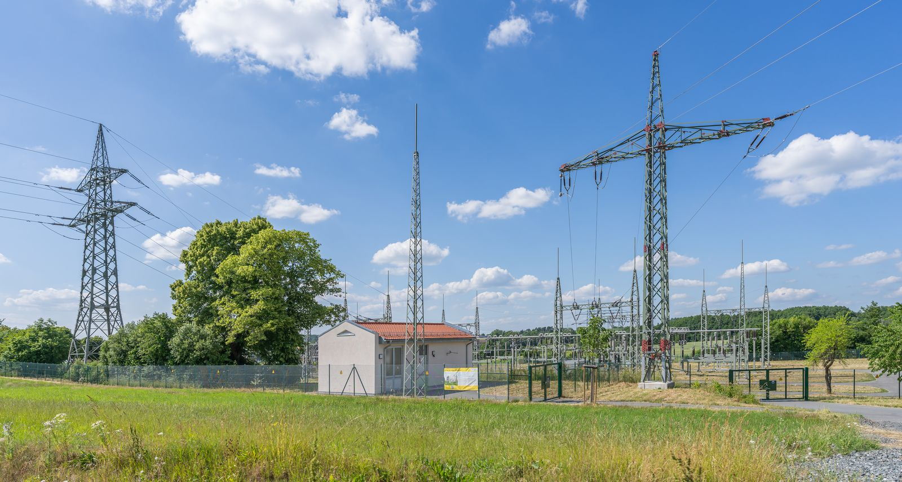

Fossil production
Large thermal plants produced baseload power from fuel. Reliable, but carbon-intensive and inflexible.
- Asset
- Coal, gas and nuclear plants
- Revenue model
- Wholesale market and long-term PPAs
Every year, wind and solar farms are switched off because the grid cannot absorb what they produce. We build grid-scale battery storage that keeps that power instead of losing it. Germany is our starting market. Europe is the scaling plan.
Every generation of independent power producers was defined by the asset it owned: first the power plant, then the wind farm. Acton is building the third, an IPP whose asset is flexibility itself.
Large thermal plants produced baseload power from fuel. Reliable, but carbon-intensive and inflexible.
Solar and wind produce zero-marginal-cost electricity, but only when the sun shines or the wind blows.
Grid-scale storage plus intelligent trading produces value from volatility, around the clock. This is where Acton operates.
From the Emsland to Lusatia: two projects in realization, six proprietary developments. Every project is listed with its data, because substance beats slogans. Poland and Italy are on the map as our next markets.

Batteries respond to the grid in fractions of a second. We build them where they are needed most.
of renewable electricity was curtailed in Germany in 2024. Wind farms switched off, solar disconnected: energy produced and thrown away. Storage turns that loss into supply.
Source: Bundesnetzagentur / SMARD, congestion management data for 2024 (approx. 3.5 percent of renewable generation). Details and methodology on our Impact page.
Shifted at scale, surplus replaces gas. If all eight of our projects are built and each shifts one full cycle a day, the arithmetic gives around 330,000 tonnes of CO2 per year. That is a model result, not a target. The method and its source are on our Impact page.
Impact, with sources15+ years scaling digital and industrial businesses. Former CEO of klarx with deep experience in fundraising, growth and operational execution.
10+ years in business strategy with in-depth experience in energy markets and in leading and implementing complex IT and business projects.
8+ years as an entrepreneur in deep tech and real estate, combining a strong product background with hands-on end-to-end project development.
We work with landowners, municipalities and developers across Europe and we answer quickly.
Contact us